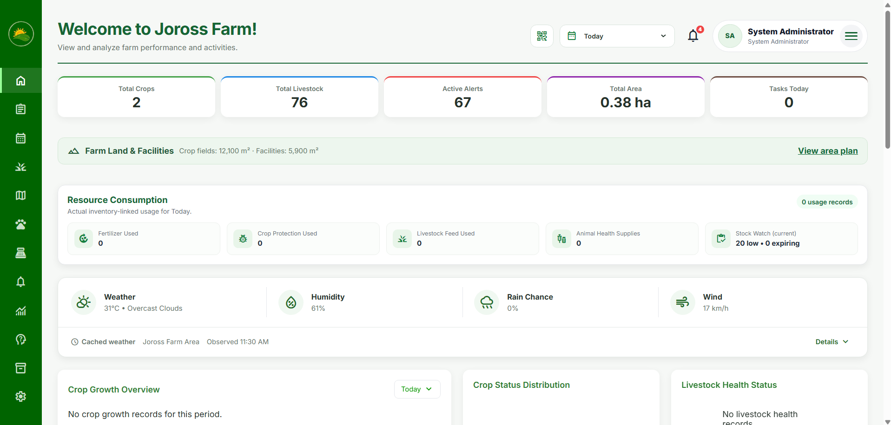

Data & Databases
SQL Server, database management, organized records, information accuracy, and inventory monitoring.
Aspiring Data Analyst & IT Developer
I organize data, develop practical systems, and connect technology with real-world needs. My focus is on building applications that make information clearer and everyday work easier.
John Christopher Bryan B. Bañares
BS Information Technology · STI College Legazpi
Curious about technology. Serious about the details. Always learning and improving.
I’m a fourth-year Bachelor of Science in Information Technology student at STI College Legazpi, with an expected graduation in 2027. I’m building my career around data analysis, database management, and software development.
Through academic projects, I’ve worked with SQL Server, user interfaces, backend services, testing, and troubleshooting. My previous inventory clerk experience also introduced me to the importance of accurate records and consistent monitoring in everyday operations.
My technical foundation covers data handling, application development, backend integration, and system quality.
SQL Server, database management, organized records, information accuracy, and inventory monitoring.
Python, JavaScript, Java, and C#, with experience applying programming concepts to academic projects.
HTML, CSS, React, Next.js, and FastAPI for working on user-facing pages and backend services.
Requirements analysis, application testing, debugging, troubleshooting, problem-solving, and collaboration.
A farm-focused application that brings operational records and monitoring views into one system, covering crops, livestock, reports, and decision-oriented information.
Reliable monitoring starts with organized records. This project gave me practical experience connecting database data, application screens, and backend services while testing and improving system functions with my team.

These are the technical contributions described in my resume, as part of a collaborative capstone project.
Explore the project source ↗Other classroom systems where I practiced using programming and database concepts to solve everyday recordkeeping tasks.
Developed features for recording and managing student attendance, organizing student information, and resolving issues discovered during testing.
Academic Project · 2024—2025Worked on a classroom-based POS system covering sales transactions, product information, inventory records, and sales data while applying programming and database fundamentals.
Academic Project · 2023—2024Screenshots of these two academic projects are not currently available.
Performed inventory oversight and clerical responsibilities, working with inventory records and monitoring activities. This experience reinforced the importance of keeping records organized and accurate.
Undergraduate studies in information technology and systems development.
Looking for someone interested in data, practical system building, and continuous improvement? I’d be glad to connect and discuss opportunities.
Email me ↗